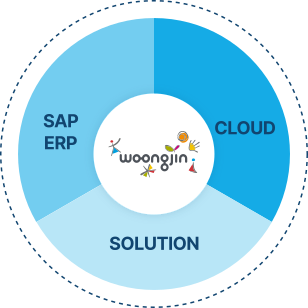
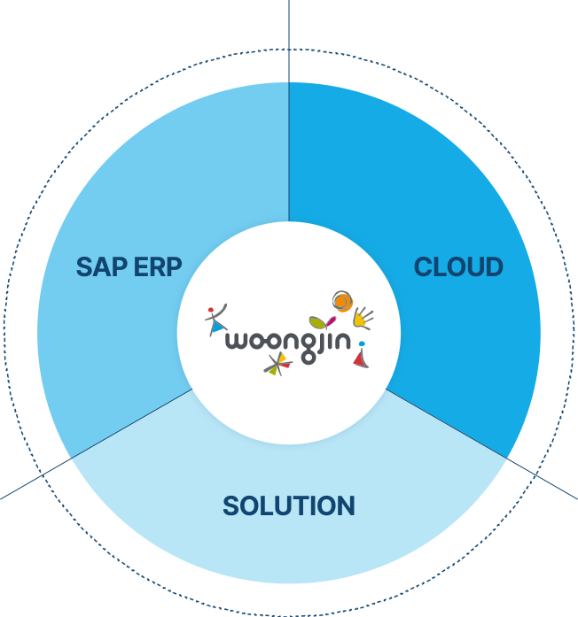
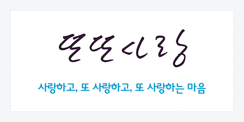
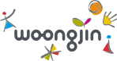
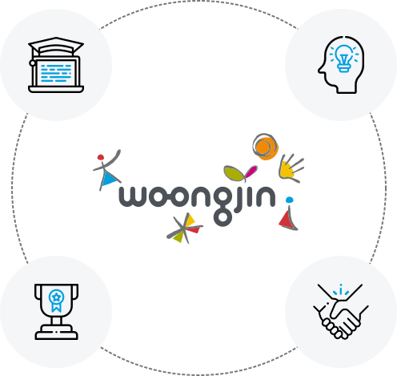
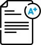

디지털 혁신의 중심에 웅진이 있습니다.
IT서비스로 디지털 혁신을 이루고, 기업 고객의 성공적인 미래가치창출을 이루기 위해 함께하는 IT컨설팅 파트너 입니다. 2003년 웅진 그룹의 SAP 시스템 통합 프로젝트를 시작으로 2008년 대외사업 진출을 통해 15년 이상 다양한 산업군의 고객사례를 보유하고 있습니다. SAP ERP, 클라우드, 렌탈특화솔루션, Web / SI분야등 사업을 확대해가며 디지털 비즈니스를 이끌고 있습니다.
Our Experience, Your Business. 웅진의 강점은 바로 ‘직접경험’입니다.
고객에게 서비스하기 전에 직접 제품을 도입해보고 장단점을 확실하게 파악하기 전까진 고객에게 제안하지 않습니다. 웅진은 그룹사 IT 총괄 운영에 대한 경험, IT시스템의 경량화 경험, 클라우드 전환에 대한 경험, 그룹의 계열사의 ‘디지털 트랜스포메이션’(Digital Transfor-mation)경험 등을 통해 IT시스템이 기업에게 끼치는 영향을 잘 알고 있습니다.웅진은 Real-Time비즈니스와 Simple한 아키텍처를 중심으로 다양한 경험을 기업고객에게 제안합니다.


SAP ERP
-
SAP S/4HANA
국내 최초 SAP S/4HANA 컨버전
성공,
국내 최다 고객 보유 -
SAP Business One
국내 1등 중견중소기업 SAP 파트너
-
SAP EWM
국내 최대 전문 인력, 스마트 물류를 위한
통합 물류 솔루션 -
Smart Factory
클라우드 기반의 스마트팩토리 환경
-
Business Synergy Suite
SAP를 더 강력하고 유연하게 지원하는
웅진의 맞춤 솔루션
CLOUD
-
Mendix
로우코드 개발 플랫폼
-
Amazon Web Services
Advanced Consulting Partner,
강력한 Total Migration -
Microsoft Azure
Cloud Solution Provider
골드파트너 -
Microsoft Power Platform
업무 생산성 향상을 위한 플랫폼
-
Naver Cloud Platform
국내 최초 SAP on NCP 성공 사례 보유
-
NAVER WORKS + 워크쓰루
네이버가 만든 기업용 협업도구와
웅진의 전자결재를 한 번에
SOLUTION
-
WRMS
웅진의 30년 렌탈 노하우,
렌탈 사업자를 위한 IT솔루션 -
WDMS
모빌리티를 위한 전략적
비즈니스 관리 솔루션 -
GAM SOLUTION
내부회계 및 권한정비
솔루션
“웅진은 기업고객의 성공을 위해 함께합니다.”
㈜웅진은 2003년 웅진그룹의 각 계열사 전산조직을 통합해 전문적인 IT서비스를 제공하기 위해 설립되었습니다.
- 한국전력공사 '차세대 전력정보시스템 1단계 구축' 감사패 수여
- 웅진아시아 말레이시아 법인 설립
- 한국로지스틱스대상 물류플랫폼부문 대상 수상
- 제 1회 실습형 AI 해커톤 ‘2025 AI RUNNER CHALLENGE’ 개최
- WRMS·WDMS 사업본부 CES 2025 참가
- ISO 27001 & 27017 인증 획득
- World IT Show 2024 참여
- SAP Korea Award for Partner Excellence 2024 “SAP RISE with SAP” 부문 수상
- WRMS 사업본부 CES 2024 참가
- 멘딕스 파트너쉽 및 LOW-CODE개발 플랫폼 신사업 진출
- 웅진-드림시큐리티 전략적 업무 협업 체결
- AWS EKS SDP 프로그램 자격 취득
- 웅진 IT사업 20주년
- SAP PARTNER SUMMIT for SME - SAP Business One Partner of Year 수상
- Microsoft Solutions Partner Program(MSPP) Infrastructure,
Digital&App Innovation 분야 자격 획득
- BMW Retail Integration Service 인증 아시아 최초 취득
- 여성가족부장관 2022 헤럴드 일자리 대상 최우수상 수상
- 네이버웍스 50,000계정 돌파
- 웅진그룹 역사관 개관
- 내부회계 및 권한감사 시스템 GAMSOLUTION 런칭
- 매장기반 구독서비스 섭씨 런칭
- Microsoft Azure Gold Partner 승급
- WRMS 클라우드 버전 런칭
- Microsoft Azure 파트너쉽 체결
- 웅진원팩그룹웨어 K비대면 바우처 플랫폼 공급기업 선정
- 현대자동차그룹 ‘중국 커넥티드 프로젝트 완료’ 감사패 수여
- AWS Migration Competency 자격 획득
- Wijard for SAP S/4HANA 1909 공식 인증 취득
- 스마트팩토리 어워드 ‘디지털마케팅 대상’ 수상
- AWS SAP Competency 자격 획득
- AWS 올해의 전문 파트너상 수상
- AWS Korea Partner Award “APN Differentiation Partner” 수상
- 웅진 클라우드센터 웹페이지 개설
- 롯데정보통신 “롯데알미늄 차세대 ERP프로젝트” 감사패 수여
- SAP 스마트팩토리/스마트물류 패키지 런칭
- WRMS 렌탈 상품의 소모품 관리 방법 및 시스템 특허 취득 및 상표권 출원
- 웅진 렌탈관리솔루션 WRMS, 딜러영업관리솔루션 WDMS 본격 런칭
- IT SSC 창립 15주년
- SAP Partner Award “Digital Marketing Award” 수상
- SAP Partner Award “S/4HANA Award” 수상
- 국내 최대 AWS 이관 작업 성공 (웅진씽크빅)
- AWS Advanced Partner 승급
- CJ 대한통운 “해외경영관리시스템 구축 프로젝트” 감사패 수여
- 라인웍스 원팩그룹웨어 30,000 계정 돌파
- SAP on NCP(네이버클라우드플랫폼) 전환 성공
- SAP Partner Award “Transformation Award” 수상
- SAP Business One Innovation Summit “Partner of the Year Award” 수상
- AWS Cloud 사업 진출
- 국내 최초 SAP S/4HANA 컨버전 구축 성공
- 아시아 최초 S/4HANA EM(1511) “Partner Center of Expertise” 획득
- SAP Partner Award “SAP Business One Performance Award”,
“Innovation Award Run Rate Initiative 부문” 수상 - SAP Business One Innovation Summit “Partner of the Year Award”,
“Cloud One Pack SAP 혁신상” 수상 - SAP Business One Innovation Summit “Partner of the Year Award” 수상
- 롯데정보통신 창립 20주년 APPLICATION 부문 파트너상 수상
- 웅진 클라우드ONEPACK 2.0 출시
- SAP Business One Innovation Summit “Top Partner Award” 수상
- SAP Partner Forum “SAP Business One Performance Award” 수상
- SAP Business One MASTER VAR (총판) 자격 취득
- 웅진 Cloud One Pack 1.0 출시
- 장애인고용 활성화 기여에 대한 고용노동부장관 표창
- SAP Partner Award “Top Partner Award”, “Performance Award” 수상
- SAP All In One 50개 고객 돌파
- 세계 최초 SAP Business One교육 사업 진출 및 도서 발간
- SAP 중소기업지원센터 웹페이지
개설 - 미국법인 설립 : WJ & Company : Irvine, CA , Woongjin ITAB : LA, CA
- 포스코 ERP 사업 성공적 수행 표창
- IT SSC 창립 10주년
- IT컨설팅사업본부 신설
- SMART APP AWARD 2012 학생교육 분야 최우수상 수상
- SAP Business One 100개 고객 돌파
- GWP KOREA “일하기 좋은 기업” 대상 수상
- SAP Business One 국내 1위, Global 5위 달성
- 웅진 IT 서비스본부 SAP All-In-One Gold Partner 획득
- SAP CloudOne 서비스 런칭
- SAP 채널파트너 “SME Partner Award” 수상
- ISACA IT Governance 단독 수상
- SAP All-In-One 대외 사업 진출
- 국내최초 클라우드 콜센터 구축
- 고용노동부 장애인 고용 우수기업 동상 수상
- SAP Business One 대외 사업 진출
- 웅진 IT서비스본부 설립
- 대외 SI사업부문 개편
- 웅진홀딩스 흡수합병
- 웅진넷 오픈(IBM DOMINO/NOTES)
- 웅진그룹 SAP ERP표준 솔루션 선정
- IDC 통합
- 웅진그룹 IT조직 통합 웅진ST설립
- 웅진그룹 IT Shared Service 제공
- 웅진그룹 인프라 표준 Architecture 설계
사랑하고, 또 사랑하고,
또 사랑하는 마음

또또사랑은 웅진의 창업자인 윤석금 회장이 직접 만든 용어입니다. 한국인에게는 자신이 좋아하는 일은 시키지 않아도 열심히 하고 신나면 놀라운 능력을 발휘하는 ‘신기(神氣)’ 정서가 있습니다. 윤석금 회장은 초기 사업을 시작하며 직원들의 기를 어떻게 살릴 수 있을까를 고민했고 그 해답은 사랑이었습니다. 자신의 일을 사랑하고 함께 일하는 동료를 사랑하면 자연스럽게 신기가 발현되고 이것이 다시 일에 대한 열정으로 이어져 조직의 성과를 낸다는 것이 또또사랑의 핵심 개념입니다.
또또사랑의 6가지 사랑은 일, 도전, 변화, 고객, 조직, 사회에 대한 사랑입니다.
웅진의 CI를 구성하는 6개 상징요소들은 웅진의 경영정신인 “또또사랑”을 의미합니다.
어떤 일을 즐겁게 했느냐, 마지못해 했느냐는 결과에 있어 엄청난 차이가 납니다. 어떤 일을 즐겁게 했다는 것은 그 일을 나의 것으로 받아들인 것이고 그 일을 하고 있는 내가 행복하다는 뜻입니다.
도전에 대한 사랑은 현재보다 더 궁금한 미래를 향한 도전을 말합니다. '어떻게 하면 좋아질까'를 끊임없이 생각하고 개선시켜 나가는 것이 바로 도전에 대한 사랑입니다.
변화하지 않고서는 어떠한 경쟁력도 가질 수 없습니다. 변화는 이제 선택이 아니라 미래를 위한 필수 불가결한 사항입니다.
회사가 유지될 수 있고 여러분이 일터에 나와 일하고 급여를 받을 수 있는 것은 모두 고객이 있기 때문입니다. 고객을 생각하고 고객을 아끼는 마음이 바로 고객에 대한 사랑입니다.
조직에 대한 사랑은 함께 일하는 사람들을 좋아하는 것입니다. 좋은 생각을 많이 하고 칭찬을 많이 하고 내가 먼저 마음의 문을 열어 놓는 것이 조직을 사랑하는 방법입니다.
사회에 대한 사랑은 나보다 '우리'를 생각하는 데서 출발합니다. 내가 가진 것을 나보다 조금 덜 가진 사람들과 나누는 것이 사회에 대한 사랑입니다.
제1의 경영원칙, 윤리경영
웅진은 창업 초기부터 공정하고 투명한 경영 활동을 기업 경영의 제1원칙으로 삼아왔으며, 2003년 윤리경영을 선포한 이후 웅진의 경영정신인 '또또사랑'을 바탕으로 윤리경영을 지속적으로 실천하고 있습니다. 특히 윤리규범 및 실천조직 등 윤리경영 시스템을 도입하고 공감대 형성 및 확산을 위한 다양한 프로그램을 개발, 실천하여 윤리경영이 기업문화로 자리매김할 수 있도록 최선의 노력을 다하고 있습니다.
특히 매년 명절 연휴 협력업체에 미리 협조 공문을 발송하여 '선물 안 주고 안 받기' 캠페인을 시행해 오고 있으며 임직원의 부정행위를 방지하고 외주 업체와 거래가 많아 부당행위가 일어날 소지가 높은 부서에서는 업무 특성상 우월한 지위를 남용하지 못하도록 윤리 제보센터를 운영하여 일상 업무에서의 윤리경영을 실천하고 있습니다.
웅진의 윤리경영은 단순히 회계의 투명만은 아닙니다. 제품의 기획과 구매, 마케팅과 고객의 사후 서비스까지 기업 활동의 전 부문에서 윤리경영을 시스템화하고 있습니다. 또한 웅진의 윤리경영은 투명경영에만 국한되지 않습니다. 좋은 제품으로 사회 발전에 기여하는 것뿐 아니라, 우리가 투명하게 얻은 수익을 통해서 사회적 소명을 다하겠습니다.
구매 투명성
회계 투명성
인사 투명성
웅진윤리경영 시스템
- 윤리경영 선포
- 윤리강령 / 윤리 규정 및 실천지침, 제보자 보호지침 제정
- 실천시스템 : 윤리제보센터 운영
윤리리더시스템 (계열사 윤리활동관리) - 윤리강령 준수서약서
그룹윤리위원회
그룹윤리사무국
(법무팀)
- 그룹 윤리사무국 : 공채 신입과정 / 그룹 승진자 과정 계열사 맞춤 특강 / 윤리경영 러브레터(가이드북) E-메시지 및 Cartoon 학습
- 계열사 윤리사무국 : 직군·본부별 교육 / 협력업체 간담회 소식지 발행 / 퀴즈 학습 / CEO 메시지 전파
- 윤리경영지수 평가 ( KPI 반영)
- 윤리실천 수준조사
- 협력업체 만족도 조사
웅진 CI, 더 큰 세계를 향한 꿈
웅진의 CI는 더 큰 세계를 향한 창의성(Creativity), 또또사랑(Love and Love more), 지속가능기업(Sustainability)을 의미합니다.
심플하면서도 차별성 있는 시각적 스타일을 나타내어 웅진만의 고유성을 돋보이도록 디자인 되었습니다.
옆으로, 위 아래로 이어져 있는 동그라미는 고객사회와 영원히 함께하고 싶은 마음을 표현한 것입니다. 이것은 사람과 사람이 어우러져 사업이 확장되어 가는 웅진의 사업시스템을 나타낸 것이기도 합니다. 또 4개의 동그라미가 바퀴처럼 되어 힘차게 굴러가는 모습으로 해석할 수도 있습니다.
시그니쳐 곁에는 언제나 6가지 '상징'이 존재합니다.
독특하고 파격적인 시각구조는 웅진의 창의적인 역발상을 반영하며, 여러 요소가 조화롭게 공존하는 웅진의 기업문화를 나타냅니다. 또한 자유롭고 생생한 느낌의 터치는 인간 중심적이고 감성적인 기업의 특성을 표현합니다. '웅진'이라는 로고타입과 각각 일, 사회, 변화, 조직, 도전, 고객에 대한 '또또사랑'을 의미하는 상징의 조화를 통해 웅진 식구들과 고객들이 서로 연결되어 무궁한 사업 발전을 위한 기반이 될 비전을 시각적으로 도출하였습니다.
인재상
웅진의 인재상은 학습하는 전문인을 기본으로 혁신하는 창의인, 성취하는 열정인, 협력하는 조직인을 지향합니다.이는 경영정신인 또또사랑의 가치를 알고 이를 통해 성장할 가능성을 가진 인재를 뜻합니다.


-
학습하는 전문인
끊임없는 학습을 통해 자신을 성장시키고 프로정신과 담당업무에 대한 전문지식을 겸비한 사람
-
혁신하는 창의인
항상 새로운 것을 찾으며 혁신과 독창성을 추구하는 사람
-
성취하는 열정인
끈기, 추진력, 의지, 일에 대한 열정을 지니고 자기 일에 책임을 다하는 사람
-
협력하는 조직인
인간관계와 팀워크를 중시하고 유연한 사고로 더불어 일할 줄 아는 사람
평가/보상제도
웅진은 구성원들의 장기적 성장 및 동기부여를 위해 공정하고 합리적인 평가/보상제도를 운영하고 있습니다.

개인/조직 업적에 대해 공정하게 평가함으로써
도전적이며 상호 협력적인 웅진 문화를 구축
개인/조직의 지속적인 성장을 위해 필요한
웅진의 인재상에 대한 평가와 일전문성 평가 진행
연봉제로 개인의 평가 결과에 따라
차등 인상 적용
개인/조직 성과와 연동하여
직무 성과 달성 구성원에게 지급
인재육성
웅진은 구성원들이 역량과 열정을 갖춘 전문가와 리더로 성장할 수 있도록 다양한 교육 프로그램을 지원하고 있습니다.
신임 임원 양성 과정, 신임 팀장 양성 과정, 팀장 리더십 워크숍, 여성 리더 교육, 리더 특강 등을 통한 리더 역량 및 통찰력 강화
SAP 모듈 과정, PM(Project Manager) 양성 과정, AWS 과정, 웹 과정 등 사내/외 직무교육으로 멀티플레이어 육성 및 자격증 취득 지원
웅진 입문 과정, New Start 과정, 직장예절, 기획력, 커뮤니케이션 등 기본 소양 향상
복리후생
웅진은 임직원들의 보다 나은 삶을 위해 실질적으로 도움이 되는 다양한 복리후생 제도를 지원하고 있습니다.
경조비, 경조휴가, 화환(조화)
출산 축하선물, 출산휴가
헬스케어 프로그램
웅진플레이도시 지원
웅진 플레이도시, 휴양 시설 이용 지원
전자도서관 이용
연말 우수사원 포상, 장기근속 포상
입학축하금 지급(초등~대학)
정기휴가, 또또사랑 휴가(7년이상 유급15일),
2시간 단위 연차, 병가 / 전국 휴양지 콘도 지원
사내 전용 카페운영
입사 후 내부 규정에 따라 1회 지급